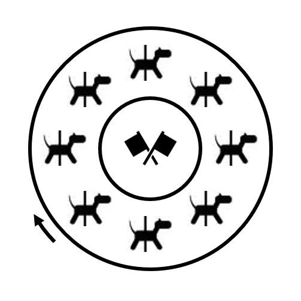

Merry-Go-Round
As you watch the riders, you notice that one seat on each merry-go-round is marked.
| Forcibly escape (5) Lab substance (6) Disinfectant and preservative (1) Judicial trials (5) Making pursuits (7) Fascist footwear (1) Highway bridge (6) Stories with a moral (5) Mathematical operation (5) Dive like a Merry-Go-Round (4) Scorekeepers (6) Removes blockage (4) Archaic term for forming by interweaving (7) | Jewish pilgrimage festival Headless nail used for shoes Relating to an old science Into the Earth Surrounding with a circular flower arrangement Casual and relaxed Switching tracks Sunflower root vegetable attributed to Jerusalem To harvest wool A tool for removing shoes by cowboys Start of the spread of COVID-19, for example Long-necked ducks Of the mind |
 |  | |||
 |  |  |  | |
 |  |